Fuel System
79 parts*USED*1996 - 1997 Dodge Viper Fuel Tank - 04709500 USED TAKE OUT
$349.00
 Out of stock
Out of stock006: 96-02 Viper Fuel Pump Relay, USED* 4848193
Part # 04848193
$80.00
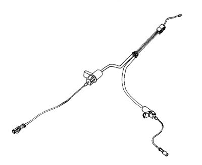
1992 - 1995 Dodge Viper RT/10 Throttle Cable Assembly - 5245657
$165.00
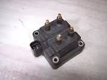
1992 - 1995 Dodge Viper RT10 Ignition Coil 4-pin 04643178
$259.99

1992 - 1995 Dodge Viper RT10 Ignition Coil 6-pin 04643177
$155.00
 Out of stock
Out of stock1992 - 1996 Dodge Viper RT/10 MAP Sensor - 56026770
Part # 56026770
$100.00
 Out of stock
Out of stock1992 - 1996 Dodge Viper RT/10 Throttle Body - 05245241
Part # 5245241
$195.00
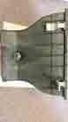
1992 - 1998 Dodge Viper RT/10 Air Cleaner Housing 04848054
Part # 04848054
$95.00
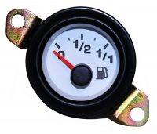
1992 - 1999 Dodge Viper RT/10 GTS Fuel Gauge - 04848581AB
$75.00
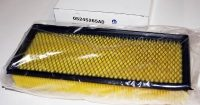
1992 - 2002 Dodge Viper Air Filter - 05245265AE
Part # 05245265AD 05245265ae
$99.00
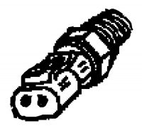
1992 - 2002 Dodge Viper Ambient Air Intake Temperature Sensor - 05227805
Part # 05227805
$63.00
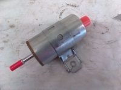
1992 - 2002 Dodge Viper Fuel Filter - 04708317
Part # 4708317
$59.00
 Out of stock
Out of stock1992 - 2002 Dodge Viper Fuel Filter - 33325VP 04708317
Part # 33325 04708317
$43.50
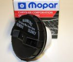
Out of stock1992 - 2002 Dodge Viper Inner Gas Cap - 04848132
Part # 4848132
$25.95
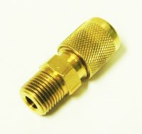
1992 - 2002 Dodge Viper Intake Manifold Schrader Valve - 05245193
Part # 05245193
$43.00
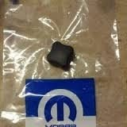
1992 - 2002 Dodge Viper Pedal Adjustment Knob - 04897163AA
Part # 04897163AA
$55.00
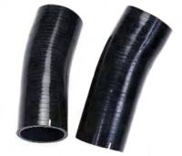
Out of stock1992 - 2002 Dodge Viper RT/10 GTS Smooth Intake Hoses - P5007362
Part # P5007362
$282.00

1992 - 2002 Dodge Viper RT/10 GTS VOLT Gauge - 04642135AB
Part # 4642135AB
$144.00
 Out of stock
Out of stock1992 - 2002 Dodge Viper Spark Plug Set - SP0RC12LYC
Part # SP0RC12LYC
$40.00

1992 - 2004 Dodge Viper Spark Plug Wire Separator Loom - 05245237AB
Part # 5245237AB
$19.95
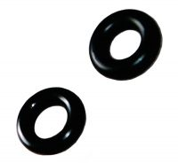
1992 - 2006 Dodge Viper Fuel Injector O-Ring Package - 04723971
Part # 4723971
$99.99
 Out of stock
Out of stock1992 - 2010 Dodge Viper Hex Nut / Coned Washer M6 x 1.00 - 06101447
Part # 6101447
$5.00

1996 - 1999 Dodge Viper Fuel Level Unit Package - 05011545AA
Part # 5011545AA
$195.00
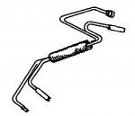
1996 - 1999 Dodge Viper Fuel Line Tube Bundle - 04763006AB
$44.00
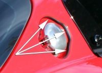
Out of stock1996 - 2002 Dodge Viper GTS ACR Rubber Fuel Surround - 05245665
Part # 05245665
$95.00

1996 - 2002 Dodge Viper GTS Fuel Trunk Closeout Seal - 05245877
Part # 05245877
$4.00
 Out of stock
Out of stock1996 - 2002 Dodge Viper Rear Body Fuse Block Cover - 04848297
Part # 04848297
$30.00

1996 - 2002 Dodge Viper Throttle Body Gasket - 04848126
$10.95
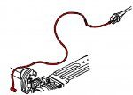
1996 - 2002 Dodge Viper Throttle Cable - 04763969
$149.00
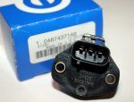
1996 - 2002 Dodge Viper Throttle Position Sensor - 04874371AB
$99.00

1996 - 2002 Viper GTS Aluminum Fuel Door - 04763684AD Dodge
Part # 04763684AD
$799.00
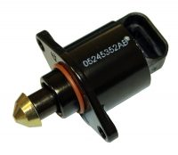
Out of stock1996 - 2004 Dodge Viper Air Idle Speed Motor Control Valve - 04778637AB Up to 8/24/2004
Part # 04778637AB
$175.00

1996.5 - 2002 Dodge Viper Spark Plug Wire Set - 04883365AA
Part # 4883365AA
$199.00
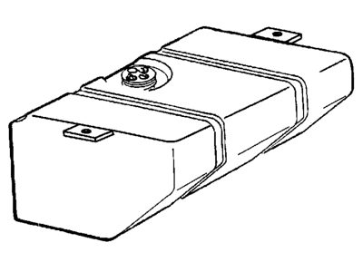
1998 - 1999 Dodge Viper Fuel Tank - 04848812 *USED* TAKE OUT HIGH QUALITY
$349.00
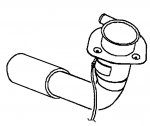
1998 - 1999 Dodge Viper RT/10 Fuel Filler Tube - 04848760AB
$358.00
 Out of stock
Out of stock1998 - 2006 Dodge Viper SRT10 Throttle Position Sensor - 04686360AC
Part # 04686360AC
$169.00
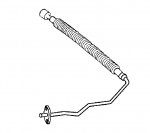
2003 - 2006 Dodge Viper Fuel Rail Supply Tube - 05096292AB
$491.00
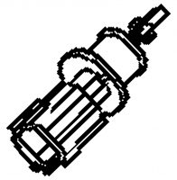
Out of stock2003 - 2006 Dodge Viper SRT10 Air Charge Temperature Sensor - 04606487AB
Part # 04606487AB
$45.00
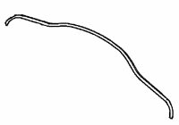
2003 - 2006 Dodge Viper SRT10 Air Cleaner Foam Seal - 05029171AB
$18.00

2003 - 2006 Dodge Viper SRT10 Brake Clutch Pedal Assembly - 05290890AG
Part # 05290890AG
$650.00
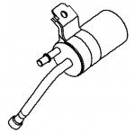
Out of stock2003 - 2006 Dodge Viper SRT10 Fuel Filter - 05290801AB
Part # 05290801AB
$499.00
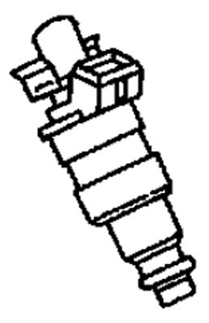
2003 - 2006 Dodge Viper SRT10 Fuel Injector - 05037224AA
$93.00

2003 - 2006 Dodge Viper SRT10 Fuel Level Unit Package - 05086615AA
Part # 05086615AA
$80.00

2003 - 2006 Dodge Viper SRT10 Fuel Pump Module Kit - Used only - 05086489AA
$345.00
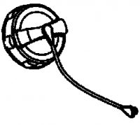
Out of stock2003 - 2006 Dodge Viper SRT10 Gas Cap - 05290145AD
Part # 05290145AD
$18.50
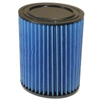
Out of stock2003 - 2006 Dodge Viper SRT10 High Flow Air Filter - P4510940
Part # P4510940
$55.00
Out of stock
2003 - 2006 Dodge Viper SRT10 MAP Sensor - 04686684AB
Part # 04686684AB
$100.00

2003 - 2006 Dodge Viper SRT10 Spark Plug Set - RC12ECC
Part # RC12ECC
$59.00
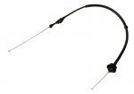
Out of stock2003 - 2006 Dodge Viper SRT10 Throttle Cable - 05037288AD
Part # 05037288AD
$145.00
Out of stock
2003 - 2010 Dodge Viper SRT10 Coupe Fuel Door Conversion Package
$849.00

2003 - 2010 Dodge Viper SRT10 Fuel Tank Heat Shield - 05290088AD
Part # 05290088AD
$75.00
 Out of stock
Out of stock2003 - 2010 Dodge Viper SRT10 Roadster Fuel Filler Housing - 04865906AB
Part # 4865906AB
$32.00
 Out of stock
Out of stock2004 - 2006 Dodge Viper SRT10 Air Idle Speed Motor Control Valve - 05245352AB
Part # 5245352AB
$102.00

2005 - 2010 Dodge Viper Fuel Tank STRAP ( frame mounted) - 05290323AA
Part # 05290323AA
$15.00

2006 - 2010 Dodge Viper SRT10 Coupe Fuel Door Hex Socket Screw - 06508699AA
Part # 6508699AA
$6.75

2006 - 2010 Dodge Viper SRT10 Coupe Fuel Door Polished - 05030331AD
Part # 5030331AD
$1,257.00

2006 - 2010 Dodge Viper SRT10 Coupe Fuel Filler Housing - 05030330AB
Part # 5030330AB
$65.00

2008 - 2010 Dodge Viper SRT10 Brake Clutch Gas Pedal Assembly - 05290926AD
Part # 05290926AD
$2,000.00
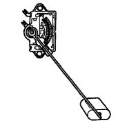
2008 - 2010 Dodge Viper SRT10 Fuel Level Unit Package - 68027708AA
Part # 68027708AA
$235.00
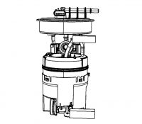
2008 - 2010 Dodge Viper SRT10 Fuel Pump Module Kit - 68026581AD
Part # 68026581AD
$1,500.00

2008 - 2013 Dodge SRT Viper Linear Purge Valve - 04891731AA
Part # 4891731AA
$11.00

2008 - 2013 Dodge Viper SRT10 Spark Plug Set - SVRE10PMC5
Part # SVRE10PMC5
$110.00
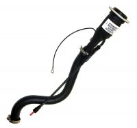
Out of stock2009 - 2010 Dodge Viper SRT10 Fuel Filler Tube - 05181503AB
Part # 5181503AB
$369.00
 Out of stock
Out of stock92 - 02 Dodge Viper Air Idle Speed Motor Gasket - 05245373
Part # 05245373
$11.00
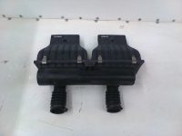
Out of stock92-95 VIPER AIR CLEANER ASSY BOX COMPLETE 5245310 5245312 DODGE
Part # 05245312 05245310
$395.00
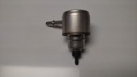
92-95 VIPER FUEL PUMP REGULATOR REPLACEMENT NEW GEN 1
$595.00
 Out of stock
Out of stock94 - 02 DODGE VIPER FUEL LINE 05245792 AT INTAKE MANIFOLD
Part # 05245792
$199.00

96-02 VIPER FACTORY BLUE SMOOTH TUBES, AIR INTAKE *PAIR* 05245778AB
Part # 05245778AB
$150.00

1992 - 2002 Dodge Viper Rivet .25 grip 06-25 Fender or Fuel Access Panel 06034578
$6.75
1992-2002 Viper GTS RT10 Fuel Access Close Out Panel Mopar Part 4848582AB
Part # 4848582AB
$600.00
1996 Dodge Viper RT/10 Fuel Pump Module - 4856873
$1,495.00
2000 - 2002 Dodge Viper RT/10 GTS Fuel Pump Module - 05017074AA
$850.00
2003 - 2006 Viper Air Cleaner Assembly 5037292aa 5037293aa 5037294ab dodge viper
$375.00
Out of stock2003 - 2010 Viper Fuel Tank Rear Heat Shield - 05290088AD
Part # 05290088AD
$136.00
2008 - 2010 Dodge Viper SRT10 Gas Cap - 52124512AA
Part # 52124512AA
$30.00
2008 - 2010 Dodge Viper Throttle Body - 53032837AB
$500.00
2008 - 2010 Dodge Viper Upper and Lower Intake Manifold - 05037784AD
$1,925.00
Out of stock92-96 VIPER RT/10 FUEL INJECTOR 05245344 SET OF 10!
Part # 05245344
$699.00
Fuel Safe Racing Fuel Cell Tank & Bladder System
$1,540.00